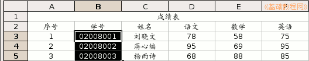
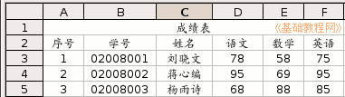

OpenOffice.org 教程之 Calc 电子表格
作者：TeliuTe 来源：基础教程网
四、文本和列宽 返回目录 下一课在数据中，有一类是文字类的文本格式，像身份证号码、学号等，下面我们来看一个练习；
1、启动Calc
1）点击点菜单“应用程序－办公－OpenOffice.org 电子表格”；
2）点菜单“文件－打开”命令，在自己的文件夹中找到上次保存的“成绩表”文件，打开它；
2、输入文本
1）瞄准表格上边的标题“B”点右键，选“插入列”命令，在A列的后面插入一个空白列，原来的B列变成C列了；
如果提示“无法插入到合并的区域内”，就先到“格式－合并单元格”菜单里，把第一行合并的单元格的勾去掉，插完了再打勾；
2）在序号旁边的单元格输入“学号”，作为列标题，在下面输入学号“02008001”，
按回车键后发现最前面的0没了，原来是当数字自动省略了，
选中B3－B5这三个单元格，瞄准点右键选“单元格格式”，点上边“数字”面板中，在出来的分类下面找到“文字”，点确定；
3）再回去就可以输入0了，分别输入“02008001”到“02008003”，按Ctrl＋S组合键保存一下文件；

3、调整列宽
1）“序号”这一列有些太宽了，可以把它调小一些，右键菜单里面有个“列宽”命令；
把鼠标移到列标题A和B之间，指针变成双箭头时向左拖动一下，列宽就减小了，也可以瞄准双击左键；
6）同样在B和C，C和D等后面的单元格之间瞄准，指针变化后双击左键，再拖动一下调整好间距；

保存一下文件；
本节学习了Calc中输入文本和调整列宽的基本操作，如果你成功地完成了练习，请继续学习下一课内容；
本教程由86团学校TeliuTe制作|著作权所有
基础教程网：http://teliute.org
美丽的校园……
转载和引用本站内容，请保留版权信息和本站链接。